Next: 分散分析モデルから混合効果モデルへ Up: 経時的繰り返し測定デザイン Previous: 動物実験データの解析
古典的な split-plot design のANOVAを考える。 経時的繰り返し測定デザインのために，
薬剤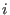 を投与した群の個体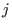 の時点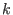 のデータを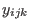 とすると，モデルは
| 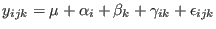 | (3.2) |
ただし，識別性のため回帰分析流に
このとき，
交互作用
に関して，自由度
 のオムニバス検定（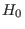
: すべての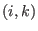
について
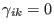
）よりも指向性の強い検定を行うことで，薬剤の効果を検証する必要がある。
のオムニバス検定（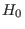
: すべての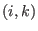
について
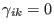
）よりも指向性の強い検定を行うことで，薬剤の効果を検証する必要がある。
そこで，個体 について，時点0 に対する時点 の差（CFB）
を考える。
であるから，
となる。 つまり，時点0 に対する時点 の差は，（対照群における時点0 に対する時点 の差）に（その差の対照群に対する群間差）を加味したものだ，ということである。
時点 におけるCFBの期待値について，実験群（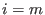 ）の対照群（ ）に対する差を 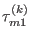 とすると，
| 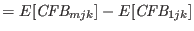 | ||
| 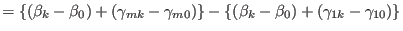 | ||
| 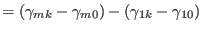 |
また，評価期間全体を通じた薬剤効果は，
| 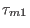 |  |
|
| 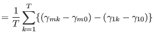 | ||
| 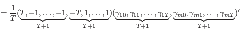 |
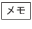
交互作用項から構成される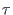 が求めたい薬剤効果であり，それが線形対比で表されるなら， を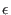 のSDで標準化してやれば，標準化対比として効果量に使えそう。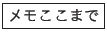
測定値が独立もしくは複合対称で，正規分布に従い，分散の等質性が成り立っていれば，交互作用 に関する検定は2要因混合デザインの分散分析によって行える2。
一般には時点間相関があるためこの条件は成立せず，有意になりやすくなることが知られている。 そこで，Greenhouse-GeisserもしくはHuynh-Feldtによる自由度修正項 を得，自由度を 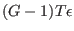 ， 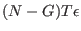 とした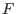 分布を参照して検定を行う。
> ### 第3章：分散分析モデルから治療効果を学ぶ
> # データのロングフォーマットへの整形
> data2.1 <- read.csv("tab2.1.dat")
> data2.1 <- as.matrix(data2.1)
> data3.5 <- rbind(data2.1[,c(1,2,3)], data2.1[,c(1,2,4)], data2.1[,c(1,2,5)], data2.1[,c(1,2,6)])
> colnames(data3.5) <- c("id","group","y")
> data3.5 <- as.data.frame(data3.5)
> data3.5 <- data3.5[order(data3.5[,1]),]
> data3.5$week <- rep(0:3)
> write.csv(data3.5, file="tab3.5.dat", row.names = F, quote = F)
>
> # 分散分析モデルによる分析
> data3.5 <- read.csv("tab3.5.dat")
> head(data3.5)
id group y week
1 1 1 7.5 0
2 1 1 8.6 1
3 1 1 6.9 2
4 1 1 0.8 3
5 2 1 10.6 0
6 2 1 11.7 1
> data3.5$id <- as.factor(data3.5$id)
> data3.5$group <- as.factor(data3.5$group)
> data3.5$week <- as.factor(data3.5$week)
> summary(data3.5)
id group y week
1 : 4 0:24 Min. : 0.500 0:12
2 : 4 1:24 1st Qu.: 8.075 1:12
3 : 4 Median : 9.500 2:12
4 : 4 Mean : 9.167 3:12
5 : 4 3rd Qu.:11.350
6 : 4 Max. :13.300
(Other):24
>
> fit3.5.01 <- aov(y~group*week+Error(id/week), data=data3.5) # 関数aov()を利用
> summary(fit3.5.01)
Error: id
Df Sum Sq Mean Sq F value Pr(>F)
group 1 42.56 42.56 2.54 0.142
Residuals 10 167.54 16.75
Error: id:week
Df Sum Sq Mean Sq F value Pr(>F)
week 3 205.15 68.38 113.66 < 2e-16 ***
group:week 3 35.50 11.83 19.67 3.05e-07 ***
Residuals 30 18.05 0.60
---
Signif. codes: 0 ‘***’ 0.001 ‘**’ 0.01 ‘*’ 0.05 ‘.’ 0.1 ‘ ’ 1
> library(car) # 関数Anova()を利用
> data2.1 <- read.csv("tab2.1.dat")
> fit2.1.03 <- Anova(lm(as.matrix(data2.1[,3:6])~group, data=data2.1),
+ idata=data.frame(week=factor(0:3)),
+ idesign=~week, type="III")
> summary(fit2.1.03, multivariate=F)
Univariate Type III Repeated-Measures ANOVA Assuming Sphericity
SS num Df Error SS den Df F Pr(>F)
(Intercept) 2452.28 1 167.54 10 146.3670 2.706e-07 ***
group 42.56 1 167.54 10 2.5404 0.142
week 35.17 3 18.05 30 19.4875 3.337e-07 ***
group:week 35.50 3 18.05 30 19.6676 3.051e-07 ***
---
Signif. codes: 0 ‘***’ 0.001 ‘**’ 0.01 ‘*’ 0.05 ‘.’ 0.1 ‘ ’ 1
/*** 分散分析表のweekのところ，aov()の結果と違うのはなぜなのか？ ***/
Mauchly Tests for Sphericity
Test statistic p-value
week 0.011005 2.6448e-07
group:week 0.011005 2.6448e-07
Greenhouse-Geisser and Huynh-Feldt Corrections
for Departure from Sphericity
GG eps Pr(>F[GG])
week 0.36927 0.0008278 ***
group:week 0.36927 0.0007995 ***
---
Signif. codes: 0 ‘***’ 0.001 ‘**’ 0.01 ‘*’ 0.05 ‘.’ 0.1 ‘ ’ 1
HF eps Pr(>F[HF])
week 0.3818309 0.0007062995
group:week 0.3818309 0.0006813689
以下のスクリプトでは，共分散構造に複合対称性を仮定し，
> # 混合効果モデルによる分析
> # [参考URL: https://stats.idre.ucla.edu/r/faq/how-can-i-test-contrasts-in-r/]
> data3.5 <- read.csv("tab3.5.dat")
> head(data3.5)
id group y week
1 1 1 7.5 0
2 1 1 8.6 1
3 1 1 6.9 2
4 1 1 0.8 3
5 2 1 10.6 0
6 2 1 11.7 1
> data3.5$id <- as.factor(data3.5$id)
> data3.5$group <- as.factor(data3.5$group)
> data3.5$week <- as.factor(data3.5$week)
>
> library(nlme)
> library(multcomp)
> fit3.5.02 <- lme(y~group*week, data=data3.5, random=~1|id,
+ cor=corCompSymm()) # 複合対称
> summary(fit3.5.02)
Linear mixed-effects model fit by REML
Data: data3.5
AIC BIC logLik
162.7942 181.3719 -70.39709
Random effects:
Formula: ~1 | id
(Intercept) Residual
StdDev: 2.009519 0.7756718 ### <- それぞれ，sigma_Bとsigma_E
Correlation Structure: Compound symmetry
Formula: ~1 | id
Parameter estimate(s):
Rho
0
Fixed effects: y ~ group * week
Value Std.Error DF t-value p-value
(Intercept) 10.933333 0.8793779 30 12.433031 0.0000
group1 -1.016667 1.2436282 10 -0.817500 0.4327
week1 0.200000 0.4478343 30 0.446594 0.6584
week2 -0.650000 0.4478343 30 -1.451430 0.1570
week3 -2.850000 0.4478343 30 -6.363961 0.0000
group1:week1 0.700000 0.6333333 30 1.105263 0.2778
group1:week2 -0.400000 0.6333333 30 -0.631579 0.5324
group1:week3 -3.766667 0.6333333 30 -5.947368 0.0000
Correlation:
(Intr) group1 week1 week2 week3 grp1:1 grp1:2
group1 -0.707
week1 -0.255 0.180
week2 -0.255 0.180 0.500
week3 -0.255 0.180 0.500 0.500
group1:week1 0.180 -0.255 -0.707 -0.354 -0.354
group1:week2 0.180 -0.255 -0.354 -0.707 -0.354 0.500
group1:week3 0.180 -0.255 -0.354 -0.354 -0.707 0.500 0.500
Standardized Within-Group Residuals:
Min Q1 Med Q3 Max
-2.52875770 -0.31923631 -0.01832677 0.31261219 2.36953609
Number of Observations: 48
Number of Groups: 12
> cont <- matrix(c(0,0,0,0,0,1/3,1/3,1/3),1) # 実験期間を通じた薬剤効果を検証（線形対比）
### 対比は， (Intercept) group1 week1 week2 week3 group1:week1 group1:week2 group1:week3
### について，最後3つの交互作用項の平均を出す形になっている。
> tau21 <- glht(fit3.5.02, linfct=cont) # 線形対比の推定と検定
> summary(tau21)
Simultaneous Tests for General Linear Hypotheses
Fit: lme.formula(fixed = y ~ group * week, data = data3.5, random = ~1 |
id, correlation = corCompSymm())
Linear Hypotheses:
Estimate Std. Error z value Pr(>|z|)
1 == 0 -1.1556 0.5171 -2.235 0.0254 *
---
Signif. codes: 0 ‘***’ 0.001 ‘**’ 0.01 ‘*’ 0.05 ‘.’ 0.1 ‘ ’ 1
(Adjusted p values reported -- single-step method)
まず，交互作用項の検定結果
Value Std.Error DF t-value p-value
group1:week1 0.700000 0.6333333 30 1.105263 0.2778
group1:week2 -0.400000 0.6333333 30 -0.631579 0.5324
group1:week3 -3.766667 0.6333333 30 -5.947368 0.0000
から，第3週目（week3）になって実験群（group1）の得点が対照群を有意に下回ったことがわかる。
また，線形対比の検定結果
Estimate Std. Error z value Pr(>|z|)
1 == 0 -1.1556 0.5171 -2.235 0.0254 *
から，実験期間3週間を通じて見ても，薬剤効果が有意であることがわかる。
複合対称モデルと無構造モデルを比較する。
> fit3.5.03 <- lme(y~group*week, data=data3.5, random=~1|id,
+ weights=varIdent(form=~1|week), cor=corSymm()) # 無構造
> summary(fit3.5.03)
Linear mixed-effects model fit by REML
Data: data3.5
AIC BIC logLik
126.2606 158.3493 -44.13031
Random effects:
Formula: ~1 | id
(Intercept) Residual
StdDev: 1.410171 1.234335
Correlation Structure: General
Formula: ~1 | id
Parameter estimate(s):
Correlation:
1 2 3
2 0.987
3 0.902 0.896
4 0.810 0.825 0.978
Variance function:
Structure: Different standard deviations per stratum
Formula: ~1 | week
Parameter estimates:
0 1 2 3
1.0000000 0.9515705 1.0837844 1.9698957
Fixed effects: y ~ group * week
Value Std.Error DF t-value p-value
(Intercept) 10.933333 0.7650890 30 14.290276 0.0000
group1 -1.016667 1.0819992 10 -0.939619 0.3696
week1 0.200000 0.0816497 30 2.449489 0.0204
week2 -0.650000 0.2355842 30 -2.759099 0.0098
week3 -2.850000 0.6552776 30 -4.349302 0.0001
group1:week1 0.700000 0.1154701 30 6.062176 0.0000
group1:week2 -0.400000 0.3331664 30 -1.200601 0.2393
group1:week3 -3.766667 0.9267024 30 -4.064591 0.0003
Correlation:
(Intr) group1 week1 week2 week3 grp1:1 grp1:2
group1 -0.707
week1 -0.245 0.174
week2 -0.031 0.022 0.087
week3 0.301 -0.213 0.059 0.848
group1:week1 0.174 -0.245 -0.707 -0.061 -0.042
group1:week2 0.022 -0.031 -0.061 -0.707 -0.599 0.087
group1:week3 -0.213 0.301 -0.042 -0.599 -0.707 0.059 0.848
Standardized Within-Group Residuals:
Min Q1 Med Q3 Max
-1.6625586 -0.8749273 0.1630891 0.5917894 1.6357343
Number of Observations: 48
Number of Groups: 12
> anova(fit3.5.02, fit3.5.03) # モデル比較（複合対称と無構造）
Model df AIC BIC logLik Test L.Ratio p-value
fit3.5.02 1 11 162.7942 181.3718 -70.39709
fit3.5.03 2 19 126.2606 158.3493 -44.13031 1 vs 2 52.53356 <.0001
無構造モデルのほうがAICが小さく，尤度比検定でも有意に当てはまりの良いことがわかる。
無構造モデルにおいて，weights=varIdent(form= 1|week)がないと，各時点での分散はすべて共通となる。
> fit3.5.04 <- update(fit3.5.02, weights=varIdent(form=~1|week*group)) # 非等質分散（複合対称）
> summary(fit3.5.04)
Linear mixed-effects model fit by REML
Data: data3.5
AIC BIC logLik
127.2078 157.6076 -45.60389
Random effects:
Formula: ~1 | id
(Intercept) Residual
StdDev: 1.792992 0.5628219
Correlation Structure: Compound symmetry
Formula: ~1 | id
Parameter estimate(s):
Rho
0.9318975
Variance function:
Structure: Different standard deviations per stratum
Formula: ~1 | week * group
Parameter estimates:
0*1 1*1 2*1 3*1 0*0 1*0 2*0 3*0
1.0000000 1.0668706 1.8147248 3.7799262 0.7121732 0.5898116 1.7801219 3.4608610
Fixed effects: y ~ group * week
Value Std.Error DF t-value p-value
(Intercept) 10.933333 0.7500537 30 14.576735 0.0000
group1 -1.016667 1.0729300 10 -0.947561 0.3657
week1 0.200000 0.0617332 30 3.239747 0.0029
week2 -0.650000 0.2633049 30 -2.468621 0.0195
week3 -2.850000 0.6454479 30 -4.415538 0.0001
group1:week1 0.700000 0.1082536 30 6.466298 0.0000
group1:week2 -0.400000 0.3426703 30 -1.167303 0.2523
group1:week3 -3.766667 0.9229200 30 -4.081249 0.0003
Correlation:
(Intr) group1 week1 week2 week3 grp1:1 grp1:2
group1 -0.699
week1 -0.132 0.092
week2 0.180 -0.126 -0.283
week3 0.195 -0.136 -0.370 0.861
group1:week1 0.075 -0.055 -0.570 0.162 0.211
group1:week2 -0.138 0.196 0.218 -0.768 -0.661 0.045
group1:week3 -0.136 0.230 0.258 -0.602 -0.699 -0.020 0.826
Standardized Within-Group Residuals:
Min Q1 Med Q3 Max
-1.6731737 -0.6711173 0.1788739 0.6740406 1.5735003
Number of Observations: 48
Number of Groups: 12
> fit3.5.05 <- update(fit3.5.03, weights=varIdent(form=~1|week*group), # 非等質分散（無構造）
+ control=lmeControl(msMaxIter=100)) ### <- 反復計算の上限を50から100に
> summary(fit3.5.05)
Linear mixed-effects model fit by REML
Data: data3.5
AIC BIC logLik
130.1504 168.9947 -42.07521
Random effects:
Formula: ~1 | id
(Intercept) Residual
StdDev: 1.41119 1.084442
Correlation Structure: General
Formula: ~1 | id
Parameter estimate(s):
Correlation:
1 2 3
2 0.996
3 0.879 0.861
4 0.630 0.633 0.894
Variance function:
Structure: Different standard deviations per stratum
Formula: ~1 | week * group
Parameter estimates:
0*1 1*1 2*1 3*1 0*0 1*0 2*0 3*0
1.000000 0.772480 0.926708 1.793186 1.221182 1.172459 1.251134 2.118754
Fixed effects: y ~ group * week
Value Std.Error DF t-value p-value
(Intercept) 10.933333 0.7900664 30 13.838500 0.0000
group1 -1.016667 1.0733670 10 -0.947175 0.3659
week1 0.200000 0.0546186 30 3.661757 0.0010
week2 -0.650000 0.2689841 30 -2.416500 0.0220
week3 -2.850000 0.7303954 30 -3.901996 0.0005
group1:week1 0.700000 0.1203652 30 5.815636 0.0000
group1:week2 -0.400000 0.3423204 30 -1.168496 0.2518
group1:week3 -3.766667 0.9576432 30 -3.933267 0.0005
Correlation:
(Intr) group1 week1 week2 week3 grp1:1 grp1:2
group1 -0.736
week1 -0.299 0.220
week2 -0.136 0.100 -0.190
week3 0.047 -0.035 0.044 0.886
group1:week1 0.136 -0.450 -0.454 0.086 -0.020
group1:week2 0.107 -0.177 0.150 -0.786 -0.696 0.087
group1:week3 -0.036 0.051 -0.034 -0.676 -0.763 -0.021 0.854
Standardized Within-Group Residuals:
Min Q1 Med Q3 Max
-1.7161427 -0.6796890 0.1311425 0.7679186 1.4878487
Number of Observations: 48
Number of Groups: 12
> anova(fit3.5.04, fit3.5.05) # モデル比較
Model df AIC BIC logLik Test L.Ratio p-value
fit3.5.04 1 18 127.2078 157.6076 -45.60389
fit3.5.05 2 23 130.1504 168.9947 -42.07521 1 vs 2 7.05736 0.2164
Taichi Okumura